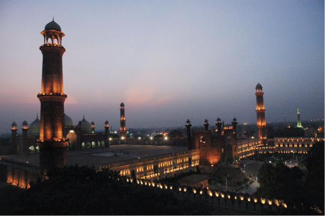

9 AĞUSTOS
Dün yazamadıklarımı bugün yazmalıyım. Patlayan lastikleri tamir etmeyip son kalan iç lastiği kullanmak büyük hataydı. Aslında ilk patlayanı tamir ettim, ama diğer yedeklerin hepsini kullanacağımızı bilemezdim.

Pakistan, Lahore
Badashi camii ve Minare-i Pakistan. Pakistan karmaşasında huzurlu bir an.
Yol inşaatları bugün bizi çok yavaşlattı. Varmamıza 5 km kalmışken iki lastik birden patlayınca ortada kaldık. Hava kararmak üzereydi. Yedek lastiği takıp şişirdim. İçine elimde kalan slime’ı da1 sıkmıştım. Şişirdim indi, şişirdim indi. No name2 iç lastiklerle bu sonuç normal. Diğer yedeği taktım. Tamir etmek hiç aklıma gelmedi. Biraz gittikten sonra o da indi. İlk patlağı yaratan çiviyi gidon çantasına atıvermiştim. Acaba başka bir şey mi batıyor, elime gelmeyen başka bir şey var mı diye tekrar kontrol ettim. Başka bir şey bulamadım. Onu çıkarıp sağlam kalan son yedeği takıverdim. Belki az zorlasam altı kez yamanmış lastiğe yedinci yamayı da yapabilirdim hafif hafif kararmaya başlayan havada, ama ihmal ettim.
İşte yol inşaatı burada tekrar çıktı karşımıza ve karanlık bastıktan sonra ortada kaldık. Çünkü otoban gişelerinin olduğu ve bildiğimiz anlamda yolun bittiği yerde lastik tekrar patladı.
Bir şehre bisikletle girmek ve çıkmak zaten çok zor. Elimizle ittiğimiz bisikletlerle ilerlemeye çalıştık. Ağır bisikletler ve yere yapışmış lastiklerle işimiz güç. Kalacak yer sormaya başlıyorum ilerledikçe. Bir otel gördük ama henüz açılmamış. Kabul etmiyorlar. Çadır kuracak güvenli bir yer de yok yakınlarda. Etraf toz duman zaten. Keşke 15 km gerimizdeki devlet otelinde kalsaydık. Ama 1500 rupi de çok fazlaydı ve sorduğumuzda saat henüz çok erkendi. En sonunda lanet bir otele geldik. Alacakaranlık kuşağı gibi. Bizi önce kabul ettiler, sonra dışarı attılar, bir aldılar, bir kovdular, çok karışık.
Sinirlenmeden nasıl yazacağım bilmiyorum. Yine de deneyeyim.
Bu ...lar önce bizi otele aldılar, sonra hayır çıkın dediler. Sonra fiyat pazarlığı yapmaya başladık. Yani tamam, kalacağız ama fiyat ne olacak onu konuşuyoruz. Sonra nereden çıktıklarını anlamadığımız polisler geldi ve biz yine dışarı atıldık. Hava kararmış, lastiği otelin bahçesindeki ışığın altında onarmaya çalıştım. O sırada polisler gitti. Otelin onlarca işçisi başımıza toplandı. Niyetlerini anlayana kadar soğuk terler döktüm. İnci biraz ileride duvara yaslanmış tamir malzemelerini toparlamaya çalışıyordu. Birkaç işçinin onun yanında olduğunu fark edince bisikleti bırakıp sinirle yanlarına fırladım. Meğer kimsenin kötü niyeti yokmuş. Epey zor dakikalardan sonra İngilizce bilen birine en yakın oteli sordum. Şehre kadar yok dedi. Almıyorlar başka çarem yok dedim. Konuştuğum kişi içeri gitti. Geri geldi. Ben konuştum alacaklar, dedi. Girdim içeri, fiyat artmış meğer. Tartışacak halim yok, bisikletleri de içerideki depo gibi bir odaya aldırdım.
Bu git gel durumları neden yaşandı, polisler neden geldi, neden bizi önce aldılar sonra almadılar anlamış değilim.
Bu akşam, bu yolculukta bisiklet üzerindeki ilk gece fotoğraflarımızı çektirdik. Hava kararınca bir an umutlarım da karardı. Şimdi aradan bir gece geçmişken bile hâlâ tekin hissetmiyorum.